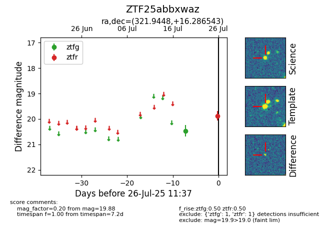

Target ZTF25abbxwaz at 2025-07-26 11:37, see:
FINK: fink-portal.org/ZTF25abbxwaz
Lasair: lasair-ztf.lsst.ac.uk/objects/ZTF25abbxwaz
ALeRCE: alerce.online/object/ZTF25abbxwaz
alt names
ZTF25abbxwaz (ztf,fink)
coordinates:
equatorial (ra, dec) = (321.9448,+16.28654)
galactic (l, b) = (68.1298,-24.25026)
photometry
last ztfg=20.46, ztfr=19.88
1 ztfg, 1 ztfr detections
